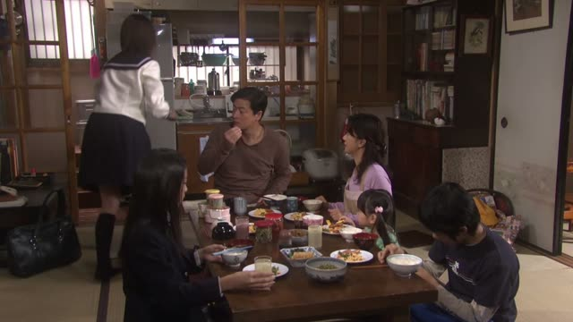
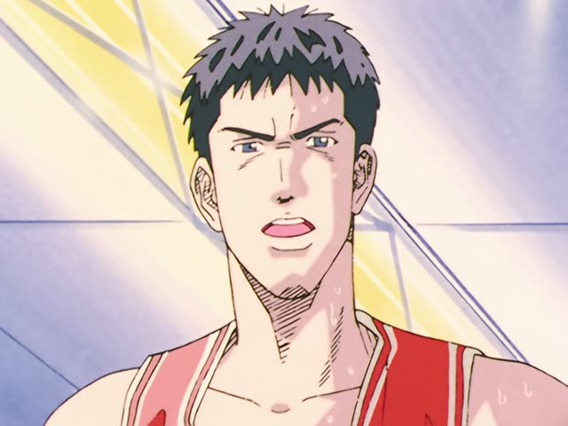

～なくてはいけない・～なきゃ
| Polite | ～なくてはいけません also ～なければなりません: more formal |
|---|---|
| Casual | ～なくちゃ・～なきゃ spoken; いけない after it often drops |
Same meaning: "have to, must". Only the politeness changes.
To say you have to do something, take the verb's ない-form, change the last い to くては, then add いけない: 行かない → 行かなくてはいけない, "I have to go". Literally: "not going won't do".
In everyday speech it gets squeezed: なくては → なくちゃ, なければ → なきゃ, and the いけない often drops: 行かなきゃ！

YouTube · video
3冊、日本に持って帰らなければいけません。
"I have to take three books back to Japan."
なければいけません is a common polite way to say "have to". On this card, 持って帰る → 持って帰らない → 持って帰らなければいけません.
1 Litre of Tears · Episode 4
すぐお見舞い行かなきゃ。
"I have to go visit [them] right away."
なきゃ is the squeezed なければ, and the いけない has dropped. On this card, 行かない → 行かなきゃ.
Quick Examples
Leaving the office party early. Your boss asks why.
明日は6時に起きなくてはいけません。
"I have to get up at six tomorrow."
PoliteThe doctor hands over a prescription.
この薬は毎日飲まなければなりません。
"You must take this medicine every day."
なければなりません: the formal version, for rules and official talk.
PoliteYou check the time at a friend's place.
あ、もう帰らなきゃ。
"Oh, I have to go home."
CasualSunday evening, your kid is still playing.
宿題、やらなくちゃね。
"You've got to do your homework, right?"
CasualWith and without
明日は早く起きる。
"I'll get up early tomorrow." Just a plan.
明日は早く起きなきゃ。
"I have to get up early tomorrow." No choice.
Examples from Media

I am Mita, Your Housekeeper · Episode 2
近いうちに 話さなきゃいけないと思ってます
"I think I have to tell them soon."
話さない → 話さなきゃいけない. 近いうちに: "one of these days, soon".

Sailor Suit and Machine Gun · Episode 4
組長は僕が 助けなきゃいけないんです！
"I'm the one who has to save the boss!"
助けない → 助けなきゃいけない.

1 Litre of Tears · Episode 4
急がなきゃ。
"I have to hurry."
なきゃ: short for なければいけない.

Slam Dunk · Episode 81
俺がやらなきゃ。
"I have to do it."
Midnight Diner: Tokyo Stories · Season 2, Episode 3
私 塾行かなきゃ。
"I have to go to cram school."
Good Morning Call · Episode 3
勉強しなくちゃ。
"I have to study."
なくちゃ: short for なくてはいけない.

Shirokuma Cafe · Episode 40
家出、止めなくちゃ。
"We have to stop this running away from home."
なくちゃ is the short なくてはいけない.

Shirokuma Cafe · Episode 45
ほら、寝てなきゃダメよ。
"Come on, you have to stay in bed."
なきゃ is the shortest form.
Further Reading
A Dictionary of Basic Japanese Grammar
Entry "~nakereba naranai" · pp. 274–276
Tae Kim's Guide to Japanese Grammar
Expressing “must” or “have to” · Expressing things that must be done
Expressing “must” or “have to” · Various short-cuts for the lazy